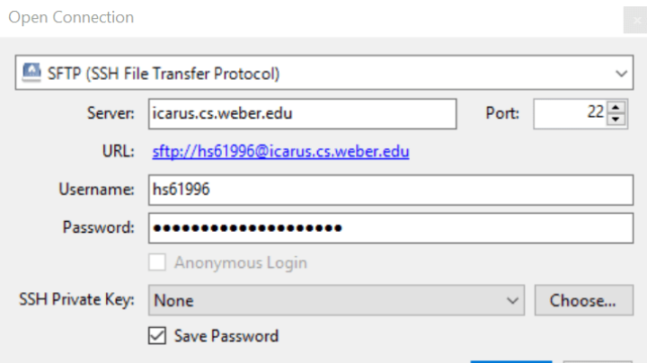
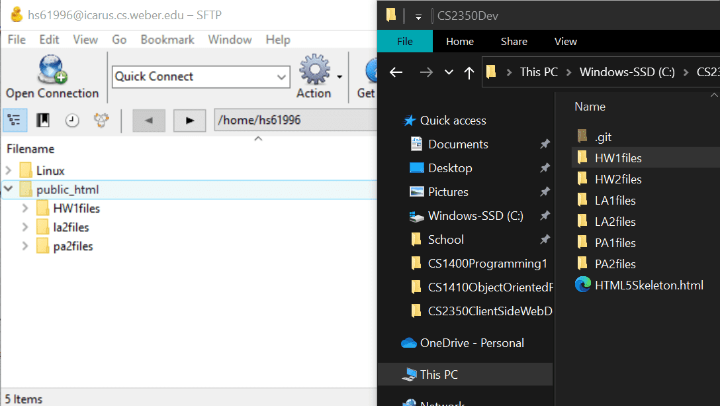
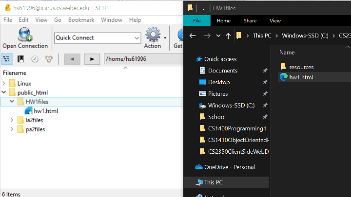
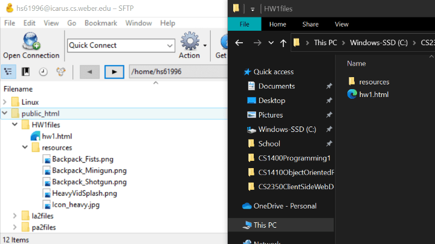
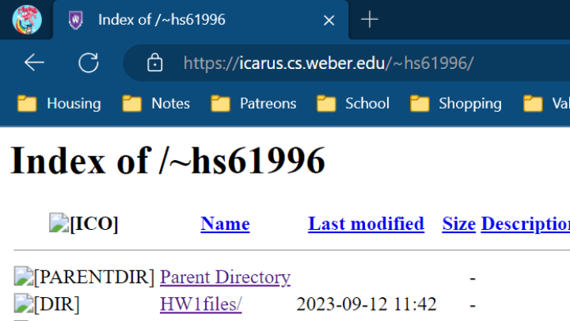
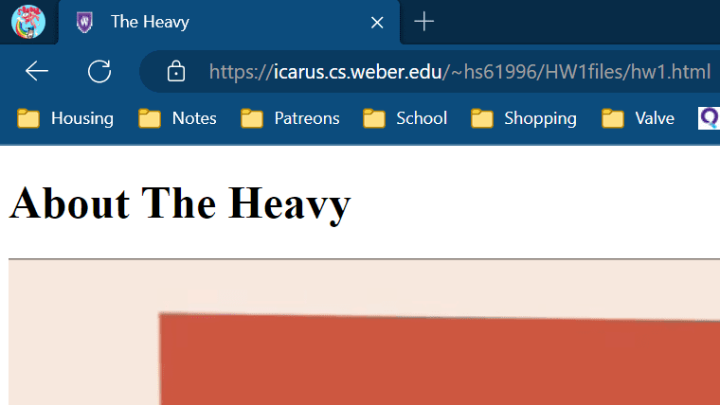
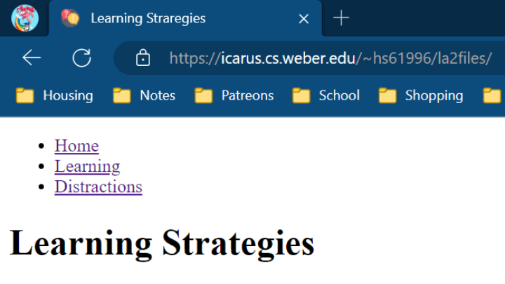

Publish Tutorial
- Open your ftp tool, I use Cyberduck, select SFTP from the drop down, enter the desired IP address, then enter your username and password
- Upload a single file by locating the file(s) you want to publish,
- You may access the index for your website(s) by opening a browser and typing the following into the search bar: "icarus.cs.weber.edu/~" + username
- To access a page saved directly within the "public_html" folder, simply add the name of the webpage after url before:
- To access a page saved withing a secondary folder, add the name of the folder and then the name of the webpage:
- If the folder has an index or homepage for your website(s), then you only need to type in the folder path and can leave out the name of the index/homepage!

 and copying over a single file over from file explorer to your ftp,
 or copying over an entire directory by copying over the folder.




